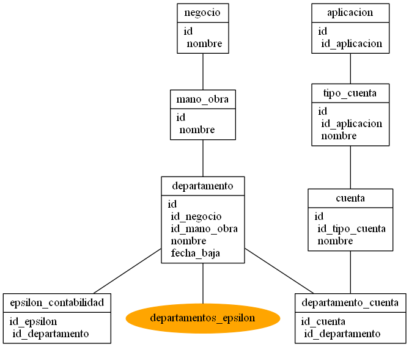

La aplicación Navsilon, ha sido diseñada para mantener las relaciones entre departamentos que existen en el sistema de Recursos Humanos (Epsilon) y Administración (Navision). Dentro de la aplicación, tenemos 4 subprocessos que son necesarios completar para mantener todas las relaciones.
El organigrama de administración consta de 3 niveles: Negocio, mano de obra y departamento.
Primero tenemos que crear los negocios. Cada negocio tendra automaticamente una mano de obra directa y una indirecta.
Por último, tenemos que crear los departamentos de administración en las respectivas manos de obra.
Una vez tengamos el organigrama finalizado, procedemos a relacionarlo con el organigrama de Recursos Humanos.
Aquí tenemos un listado de todos los departamentos de Recursos Humanos y tenemos que relacionar cada uno de ellos con los departamentos que acabamos de introducir.
Por otra parte, tambien tenemos las cuentas contables que se organizara por aplicación. De ahi que primero tengamos que crear la aplicación a la cual las cuentas pertenecerán.
Una vez creada la aplicación, tenemos que crear los tipos de cuenta que tendra esa aplicación. Estas son las agrupaciones de cuentas que cada departamento tendra que tener.
Por último, dentro de cada tipo de cuenta, crearemos todas las cuentas necesarias.
Para finalizar con las cuentas, tenemos que relacionar para cada departamento dentro de cada aplicacion, las cuentas a las que se inputaran los gastos.
